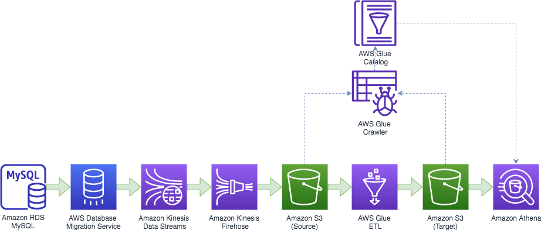
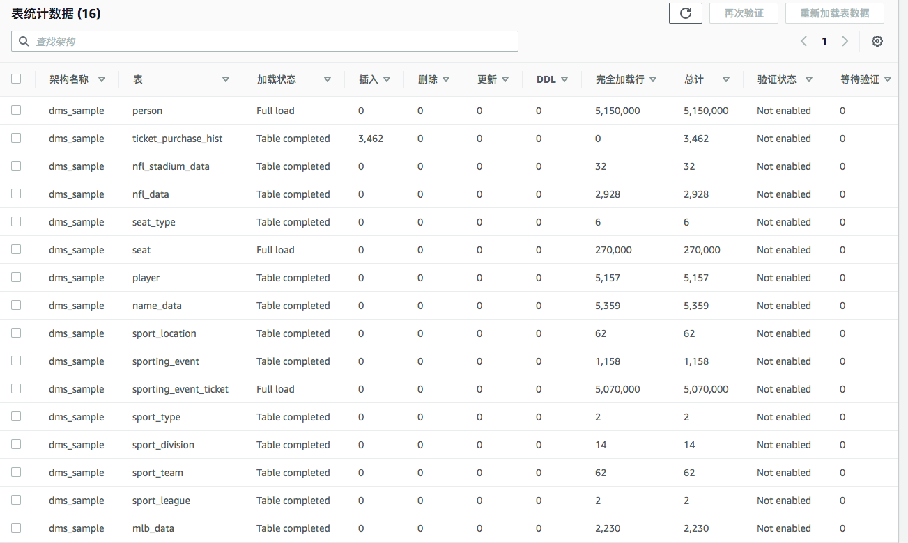
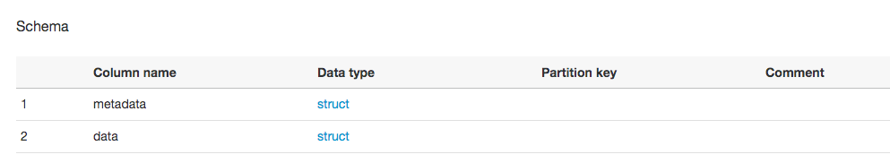
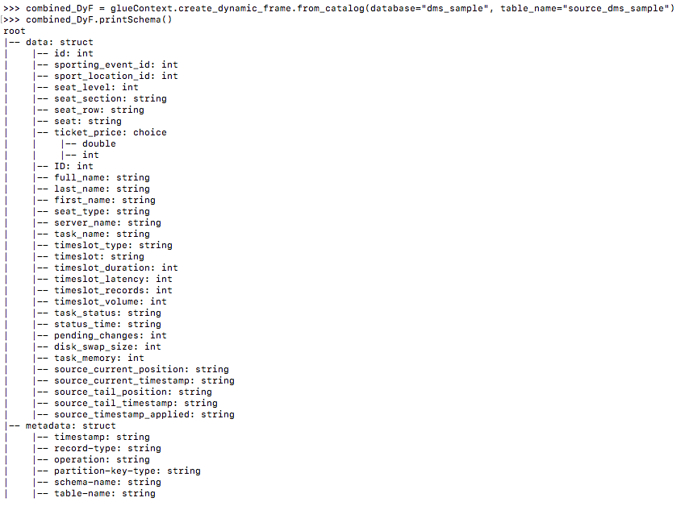
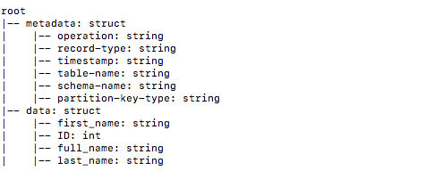
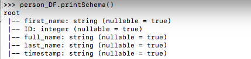
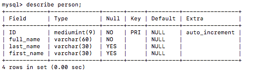
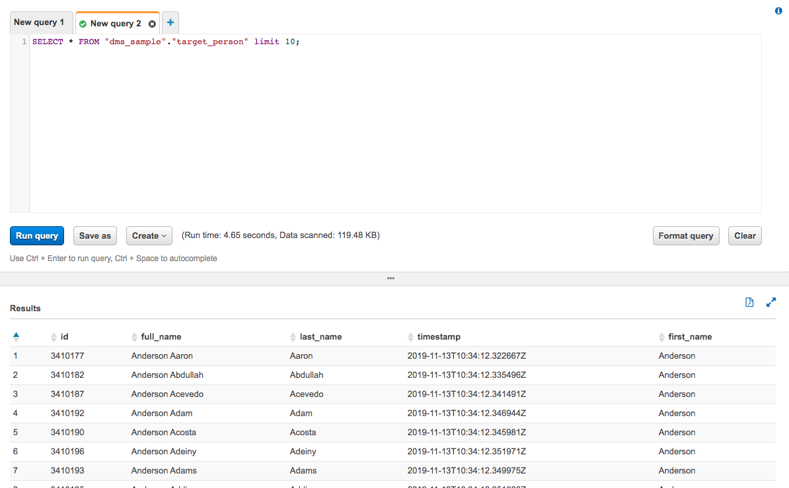

使用 AWS Glue 从 Kinesis 数据流中分离出不同的数据库表格
以流为起点的架构设计。
我们看到越来越多的用户，越来越关注数据的时效性，以流处理为起点开始设计他们的大数据平台，比如说数据采集时，不再是周期性的用SQL进行批量查询，而是实时采集系统日志或者数据库 WAL（Write-Ahead Logging）这些变更信息。
像在游戏行业中，我们会实时采集游戏服务器的系统日志，来了解用户端与服务端的交互信息；同时，我们也会实时采集记录到数据库中的对战信息、消费信息。这些数据既可以帮忙运维人员实时监控游戏运行，也可以让运营人员对活动策划获得准确和及时的反馈。
Amazon Kinesis Data Streams 就是一款非常适合的流式存储，它不但在 Amazon 内部得到广泛使用，也因为 Serverless 免运维、易扩展等特点深受 AWS 用户的喜爱。我们可以通过 API、KPL 或者 Kinesis Agent 把系统日志投递到 Amazon Kinesis Data Streams，也可以通过 AWS Database Migration Service(DMS) 采集各种关系型数据库的 WAL 日志。
不过很多时候，我们会把一个 Database 的多张表通过同一个 DMS 任务处理，投递到了同一个 Kinesis 数据流中。DMS 贴心的为每一条记录，都附加了 Meta Data 来说明数据的来源。我们可以通过适合的工具，来分离出我们需要的表格中的记录。
当然，对 Amazon Kinesis Data Streams 中的流式数据，既可以通过 Amazon Kinesis Analytics 或者 Apache Spark Structured Streaming、Apache Flink 此类的流式分析工具，也可以使用 AWS Glue 或者 Apache Spark SQL 进行批量处理。
这里，我们就介绍，如何通过使用 AWS 强大的 ETL 工具 AWS Glue，通过一个简单操作，来分离出 Amazon Kinesis Data Streams 中不同的数据表格。
目录
AWS Glue 介绍
AWS Glue 是一项完全托管且按需付费的提取、转换和加载 (ETL) 服务，可自动执行分析所需的耗时数据准备步骤。AWS Glue 通过 Glue 数据目录自动发现并绘制您的数据，推荐并生成 ETL 代码，以将源数据转换成目标架构，并在完全托管的横向扩展 Apache Spark 环境中运行 ETL 作业，将数据加载到其目标中。它还使您能够设置、编排和监控复杂的数据流。
AWS Glue 由数据目录（一个中央元数据存储库）、ETL 引擎（可自动生成 Scala 或 Python 代码）和灵活的计划程序（可处理依赖关系解析、作业监控和重试）构成。这些组件结合在一起，自动执行与发现、分类、清理、丰富和移动数据相关的许多无差别的繁重任务，因此您可以将更多时间用在数据分析上。
操作介绍
数据的采集部分，我们使用了 AWS Database Migration Service 从源数据库（这里我们使用了一台 Amazon RDS MySQL）进行全量和增量的数据采集，然后发送到 Amazon Kinesis Data Streams。 Amazon Kinesis Firehose 消费 Amazon Kinesis Data Streams 数据流，为我们把数据投递到 S3.
接下来，就由 AWS Glue 来接管数据处理过程。爬网程序（Crawler）能根据分析数据内容，为我们自动生成表结构，并将表信息集中存储在统一的元数据存储——数据目录（Catalog）中。元数据除了供 AWS Glue 自身的 ETL 程序使用外，也可以由其它分析工具调用，比如说，使用 Amazon EMR、Amazon Athena 或者 Amazon Redshift Spectrum。AWS Glue ETL 基于 Apache Spark，但作了很多功能增强，我们就借助于AWS Glue 对 PySpark 语法的扩展，来灵活处理此问题。具体来讲，就是使用 filter 这个 Transform 方法，基于 metadata 中的 schema name + table name 对记录进行过滤，把不同的表格内容分离出来。
分离出来的结果数据，我们再次存放进 S3, 然后再使用 Amazon Athena 进行即席查询。
整体架构如图所示：

接下来，我们将通过一个 Demo 来演示具体操作，假设您已经：
启用了 AWS 东京区域（ap-northeast-1，本次实验假定在东京区域）；
安装并正确设置了 AWS CLI；
创建了一台 MySQL 5.7 版本的 Amazon RDS 服务器，创建 RDS 实例前先创建一个参数组，并按 DMS 对 RDS for MySQL 源的要求 修改参数组和实例其它设置。示例数据库可以使用 DMS 示例数据库 ，在运行
install-rds.sql建库之前，需要在 aws-database-migration-samples/mysql/sampledb/v1/ 目录下运行以下命令进行一些修正：
sed -i '1625d;s/Insert into/Insert ignore into/g' name_data.sql;
执行 install-install-rds.sql 完成导入后，需要在 MySQL 中给 dms_user 读取 Binlog 的权限：
GRANT REPLICATION CLIENT, REPLICATION SLAVE ON *.* TO dms_user;
新建 Kinesis Data Streams 数据流和 Firehose 投递流
Kinesis Data Streams 的创建非常简单，提供 stream 名称和 shard 数量即可，以下是 CLI 命令示例：
aws kinesis create-stream \
--stream-name "dms_sample" \
--shard-count 2 \
--region ap-northeast-1
Kinesis Firehose 可以把 Kinesis Data Streams 中的数据投递到指定存储，目前支持 Redshift、S3、ElasticSearch 和 Splunk,我们这里以 S3 为例。配置前需要定义好 IAM role 并建好 S3 bucket，ARN 的格式可以参考 这个页面。
下面是创建 Firehose 投递流的 CLI 命令示例，请对配置中的 YOUR_ACOUNT_ID、ROLE_NAME 和 BUCKET_NAME 根据实际情况进行替换。
echo '''
{
"RoleARN": "arn:aws:iam::YOUR_ACOUNT_ID:role/ROLE_NAME",
"BucketARN": "arn:aws:s3:::BUCKET_NAME",
"Prefix": "source/dms_sample/!{timestamp:yyyy-MM-dd}",
"ErrorOutputPrefix": "source/errors/!{firehose:error-output-type}-!{timestamp:yyyy-MM-dd}",
"BufferingHints": {
"SizeInMBs": 128,
"IntervalInSeconds": 600
},
"CompressionFormat": "GZIP",
"CloudWatchLoggingOptions": {
"Enabled": true,
"LogGroupName": "deliverystream",
"LogStreamName": "S3Delivery"
}
}
''' > s3_settings.json
echo '''
{
"KinesisStreamARN": "arn:aws:kinesis:ap-northeast-1:YOUR_ACOUNT_ID:stream/dms_sample",
"RoleARN": "arn:aws:iam::YOUR_ACOUNT_ID:role/ROLE_NAME"
}
'''> kinesis_settings.json
aws firehose create-delivery-stream \
--delivery-stream-name "dms_sample" \
--delivery-stream-type "KinesisStreamAsSource" \
--kinesis-stream-source-configuration "file://kinesis_settings.json" \
--s3-destination-configuration "file://s3_settings.json" \
--region ap-northeast-1
配置 DMS 进行数据采集
AWS Database Migration Service(DMS) 操作过程可以分为以下步骤：
准备 DMS 环境，包括创建 VPC、VPC 子网、IAM 角色和 EC2 安全组，创建 DMS 子网组；
创建 DMS 复制实例，因为 DMS 需要缓存从任务开始时起的数据库变更，所以预留好内存和硬盘应对需要。生产环境下，建议启用 Multi-AZ 保证 DMS 的高可用；
建立指向源数据库和 Kinesis 的终端节点，确保复制实例可以成功连接终端节点；
创建并启动迁移任务，数据库记录就会源源不断的进入 Amazon Kinesis Data Streams。
我们可以参考 DMS产品文档 配置好 DMS 复制实例和 MySQL 终端节点，Kinesis 目标终端节点的配置可以参考 这个页面。复制实例引擎版本务必确定在 3.1.4 及以上。配置完后，验证复制实例到终端节点的连接。
要注意的是，DMS 默认使用单线程向 Kinesis 进行投递，因此我们需要对任务进行配置，增加并发度。下面的设置中，MaxFullLoadSubTasks 设置并发处理 8 张表，ParallelLoadThreads 为 16 表示每张表并发 16 线程进行处理。
下面是创建 DMS 任务的 CLI 命令示例，ARN 在各个组件的详情页，根据实际情况进行替换。
echo '''
{
"TargetMetadata": {
"ParallelLoadThreads": 16,
"ParallelLoadBufferSize":500
},
"FullLoadSettings": {
"MaxFullLoadSubTasks": 8,
"TransactionConsistencyTimeout": 600,
"CommitRate": 10000
},
"Logging": {
"EnableLogging": true
}
}
''' > task_settings.json
echo '''
{
"rules": [
{
"rule-type": "selection",
"rule-id": "1",
"rule-name": "dms_sample-all",
"object-locator": {
"schema-name": "dms_sample",
"table-name": "%"
},
"rule-action": "include"
}
]
}
''' > table_mapping.json
aws dms create-replication-task \
--replication-task-identifier "dmssample-streams" \
--source-endpoint-arn arn:aws:dms:ap-northeast-1:your_account_id:endpoint:SOURCE_ARN \
--target-endpoint-arn arn:aws:dms:ap-northeast-1:your_account_id:endpoint:TARGET_ARN \
--replication-instance-arn arn:aws:dms:ap-northeast-1:your_account_id:rep:INSTANCE_ARN \
--migration-type "full-load-and-cdc" \
--table-mappings 'file://table_mapping.json' \
--replication-task-settings 'file://task_settings.json' \
--region ap-northeast-1
当看到任务状态转为 ready 后，启动任务：
aws dms start-replication-task \
--replication-task-arn arn:aws:dms:ap-northeast-1:your_account_id:task:TASK_ARN \
--start-replication-task-type start-replication \
--region ap-northeast-1
在任务详情页，可以查看 DMS 识别并处理的表：

增加一个 Glue Job 来进行表格分离操作
AWS Glue 提供了一个爬网程序 （Crawler），可以为我们自动发现和更新数据目录中的元数据， 这大大减轻了我们的工作负担。除了支持 Parquet、ORC、JSON、CSV 等开源数据格式，爬网程序也可通过 JDBC 爬取各种常用关系型数据库。如果爬取程序对数据的解析不能满足您需求，比如说需要对 JSON 进行复杂的路径解析，您也可以编写自定义分类器。
我们先创建一个 Glue Crawler，数据位置为 Firehose 投递的 S3 Bucket，因为只需要了解数据的格式，所以对更新和删除造成的结构变更，我们保持默认操作（具体过程参考 产品文档。完成爬取程序设定后，我们手动点击运行，稍等片刻，即可在数据库中看到扫描到新的表格，可以看到仅有 metadata 和 data 两个字段。

每条记录长这个样子：
{
"data": {
"id": 2633753,
"sporting_event_id": 52,
"sport_location_id": 26,
"seat_level": 2,
"seat_section": "30",
"seat_row": "J",
"seat": "19",
"ticket_price": 46.570000
},
"metadata": {
"timestamp": "2019-11-13T09:59:08.059607Z",
"record-type": "data",
"operation": "load",
"partition-key-type": "primary-key",
"schema-name": "dms_sample",
"table-name": "sporting_event_ticket"
}
}
多个表的内容，揉杂在了一起，我们需要通过一个 Glue ETL 任务来进行分离。Glue 的 Spark 环境支持 Scala 和 Python，下面我们基于 Python 3 来编写代码。为了方便调试，我们可以创建一个 开发终端节点和一个 Zeppelin Notebook Server，开发终端节点的权限设置可参考 文档。 当然也可以直接 SSH 到 Development Endpoint 的 REPL 调试界面。
初始化，导入必要的包
以下以 SSH 登录到开发终端节点，在 Python REPL 环境中执行为例：
from pyspark.context import SparkContext
from pyspark.sql.functions import col
from awsglue.context import GlueContext
from awsglue.transforms import *
from awsglue.utils import getResolvedOptions
from awsglue import DynamicFrame
# Create a Glue context
glueContext = GlueContext(SparkContext.getOrCreate())
从 Glue 爬取程序建立的表对象创建一个 DynamicFrame
database 和 table_name 根据 Glue 数据目录中的内容进行修改。
# Create a DynamicFrame from AWS Glue Catalog
combined_DyF = glueContext.create_dynamic_frame.from_catalog(database="dms_sample", table_name="source_dms_sample")
可以看到现在的数据结构：

根据表名进行过滤
我们根据 metadata 中的 schema-name 和 table-name 来过筛选出我们需要的表格 dms_sample.person，因为 Create Table 和 Drop Table 之类的 DDL 语句会生成 data 为空的记录，我们也过滤掉这些记录。
# Acquire rows from "person" table
person_DyF = combined_DyF.filter(f = lambda x: \
x["metadata"]["schema-name"] == "dms_sample" and \
x["metadata"]["table-name"] == "person" and \
x["data"] is not None)
经过过滤之后的数据结构如下：

去掉字段前缀
转换成 PySpark 的 DataFrame， 通过 select 来去掉字段前缀，并且仅保留 data 字段和 metadata 里面的 timestamp 。
# Select columns from DataFrame
person_DF = person_DyF.toDF().select(col("data.*"), col("metadata.timestamp"))
可以看到现在的表结构已经和我们源表结构相似了（除了我们故意增加的 timestamp 字段）。
Glue 中的表：

MySQL 中的源表：

写入 S3
我们把 DataFrame 转换回 DynamicFrame，然后使用 Parquet 格式写回 S3。为了减少文件的数量，我们通过 repartition 进行了合并。另外，我们使用 gender 作为 partitionKey 展示了目标表分区的功能。当然，在实际使用中，要根据数据量来选择 repartition 的分区数量，防止 OuteOfMemery 错误出现；目标表是否分区、分区键的选择也要根据数据分布和查询模式来确定。
S3 路径根据实际情况进行修改。
# Write to S3
tmp_dyf = DynamicFrame.fromDF(person_DF.repartition(1), glueContext, "temp")
glueContext.write_dynamic_frame.from_options(\
tmp_dyf, \
"s3",\
{"path": "s3://bucket/target/dms_sample/person/", "partitionKeys": ["first_name"]},\
"parquet")
现在，我们的数据已经完成了处理，并存放在了期望的位置，接下来就可以进行查询了。Amazon Redshift、Amazon EMR 和 Amazon Athena 都可以基于 AWS Glue 数据目录（Catalog）中的元数据进行查询，这就是托管的、集中的元数据管理带来的便捷性。
我们以 Amazon Athena 为例进行即席查询，首先，我们通过另外一个 Glue Crawler 爬网程序来爬取目标表的结构，在爬网程序中定义数据存储位置为上面 AWS Glue ETL 的输出位置 s3://bucket/target/dms_sample/person/，手动执行这个爬网程序，看到数据库中出现了一张新的表。切换到 Amzon Athena，我们看到元数据已经同步更新，然后，就可以对目标表进行查询了：

总结
在这个 Demo 中，我们把源表中整个 schema 采集到了一个 Kinesis 数据流里面，再利用 AWS Glue 的 filter 筛选出我们需要的表，并充分利用 AWS Glue DynamicFrame schema on-the-fly 的特性，根据当前数据内容，动态生成表结构。
我们看到，AWS Glue 提供了托管的 Spark 集群，还提供了结构爬取、集中元数据存储功能，并且通过 DynamicFrame 对 PySpark 进行了扩展，可以作为我们一站式 ETL 解决方案。